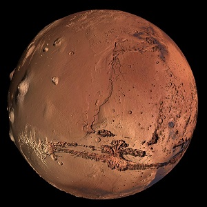

Mars: The Red Planet
Development in technology is what makes Mars missions possible
An Introduction on Mars
Mars is fascinating because it has several similarities to Earth, for example the length of an Earth day is (roughly) the same as a day on Mars. An interesting fact about Mars, is the reason it is called "The Red Planet". It is because there are iron minerals in the soil that oxidize (rust) causing the soil and the atmosphere to appear a reddish color. The major significance about Mars though, is it's potential for future life, and what life could have existed there at some point in time.To view imagery and perform analysis on data from Mars Click here !
Facts About Mars
| Earth | Mars | |
|---|---|---|
| Average Distance from Sun | 93 million miles | 142 million miles |
| Diameter | 7,926 miles | 4,220 miles |
| Length of Year | 365.25 Days | 687 Earth Days |
| Gravity | 2.66 times that of Mars | 0.375 that of Earth |
| Temperature | Average 57 degrees F | Average -81 degrees F |
| Atmosphere | nitrogen, oxygen, argon, others | mostly carbon dioxide, some water vapor |